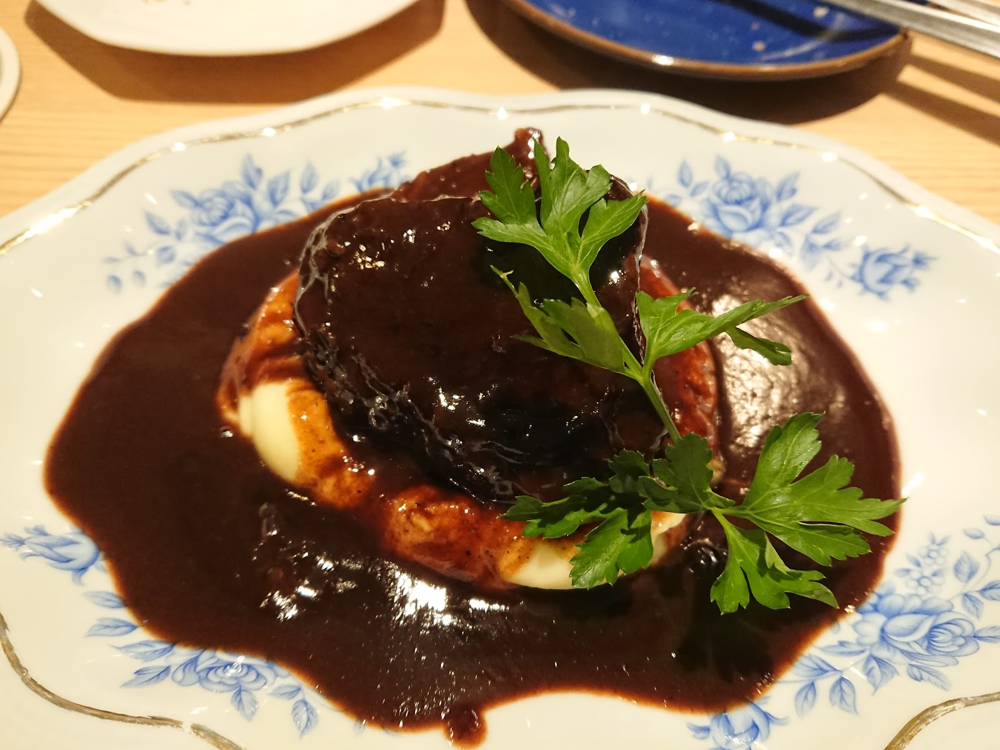

MENU
ワインやクラフトビールとともに味わう、洋風の一皿たちをイメージでご紹介します。メニュー内容は時期により異なりますので、詳しくは店舗までお問い合わせください。
お料理について

じっくり煮込んだ肉料理のような、食べ応えのある一皿
ソースまでじっくりと仕立てられた、ナイフを入れるとほろりとほどけるような煮込み料理をイメージしています。
写真提供: Hisashi Tazawaさん(Googleマップ)

前菜の盛り合わせのような、ワインに寄り添う一品
パテやテリーヌのような滋味深い味わいと、彩りのよい野菜が一皿に並ぶ、乾杯のお供にぴったりの盛り合わせをイメージしています。
写真提供: K Nさん(Googleマップ)

お飲み物について

クラフトビールやワインを中心に、氷の涼やかな彩りが目を引くカクテルのような一杯まで、その日の気分に合わせて選んでいただけるドリンクをご用意しているような雰囲気です。
写真提供: K Nさん(Googleマップ)
※メニュー内容は仕入れや季節により変更となる場合がございます。詳しくは店舗までお問い合わせください。